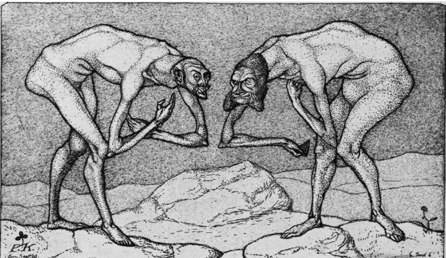

Learning resources
The module
The set textbook for MCiE1012, covering civics, the major ethical theories, and the state and citizenship in one volume.

MCiE1012 course module
Freshman-level reading covering the origin and purpose of civic and ethical education, the major normative and applied ethical theories, and the structure of the state, constitutions, and human rights.
Download module